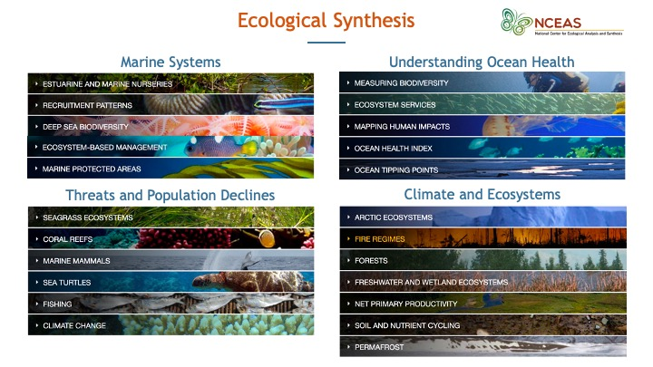

1 Session 1: Open Science Best Practices
1.1 Introduction to reproducible research
Reproducibility is the hallmark of science, which is based on empirical observations coupled with explanatory models. And reproducible research is at the core of what we do at NCEAS, research synthesis.
The National Center for Ecological Analysis and Synthesis was funded over 25 years ago to bring together interdisciplinary researchers in exploration of grand challenge ecological questions through analysis of existing data. Such questions often require integration, analysis and synthesis of diverse data across broad temporal, spatial and geographic scales. Data that is not typically collected by a single individual or collaborative team. Synthesis science, leveraging previously collected data, was a novel concept at that time and the approach and success of NCEAS has been a model for other synthesis centers.
 During this course you will learn about some of the challenges that can be encountered when working with published data, but more importantly, how to apply best practices to data collection, documentation, analysis and management to mitigate these challenges in support of reproducible research.
Why is reproducible research important?
Working in a reproducible manner builds efficiencies into your own research practices. The ability to automate processes and rerun analyses as you collect more data, or share your full workflow (including data, code and products) with colleagues, will accelerate the pace of your research and collaborations. However, beyond these direct benefits, reproducible research builds trust in science with the public, policy makers and others.

What data were used in this study? What methods applied? What were the parameter settings? What documentation or code are available to us to evaluate the results? Can we trust these data and methods?
Are the results reproducible?

Ionnidis (2005) contends that “Most research findings are false for most research designs and for most fields”, and a study of replicability in psychology experiments found that “Most replication effects were smaller than the original results” (Open Science Collaboration, 2015).

In the case of ‘climategate’, it took three years, and over 300 personnel, to gather the necessary provenance information in order to document how results, figures and other outputs were derived from input sources. Time and effort that could have been significantly reduced with appropriate documentation and reproducible practices. Moving forward, through reproducible research training, practices, and infrastructure, the need to manually chase this information will be reduced enabling replication studies and great trust in science.
Computational reproducibility
While reproducibility encompasses the full science lifecycle, and includes issues such as methodological consistency and treatment of bias, in this course we will focus on computational reproducibility: the ability to document data, analyses, and models sufficiently for other researchers to be able to understand and ideally re-execute the computations that led to scientific results and conclusions.
The first step towards addressing these issues is to be able to evaluate the data, analyses, and models on which conclusions are drawn. Under current practice, this can be difficult because data are typically unavailable, the method sections of papers do not detail the computational approaches used, and analyses and models are often conducted in graphical programs, or, when scripted analyses are employed, the code is not available.
And yet, this is easily remedied. Researchers can achieve computational reproducibility through open science approaches, including straightforward steps for archiving data and code openly along with the scientific workflows describing the provenance of scientific results (e.g., Hampton et al. (2015), Munafò et al. (2017)).
Conceptualizing workflows
Scientific workflows encapsulate all of the steps from data acquisition, cleaning, transformation, integration, analysis, and visualization.

Workflows can range in detail from simple flowcharts to fully executable scripts. R scripts and python scripts are a textual form of a workflow, and when researchers publish specific versions of the scripts and data used in an analysis, it becomes far easier to repeat their computations and understand the provenance of their conclusions.
1.1.0.1 Summary
Computational reproducibility provides:
- transparency by capturing and communicating scientific workflows
- research to stand on the shoulders of giants (build on work that came before)
- credit for secondary usage and supports easy attribution
- increased trust in science
Preserving computational workflows enables understanding, evaluation, and reuse for the benefit of future you and your collaborators and colleagues across disciplines.
Reproducibility means different things to different researchers. For our purposes, practical reproducibility looks like:
- Preserving the data
- Preserving the software workflow
- Documenting what you did
- Describing how to interpret it all
During this course will outline best practices for how to make those four components happen.